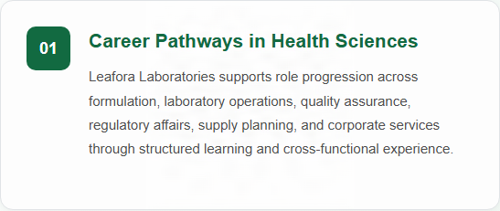
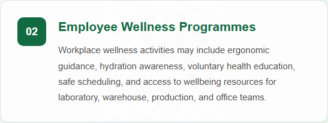
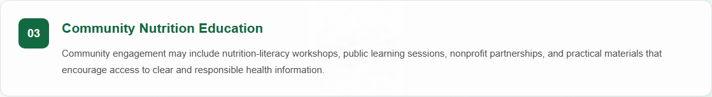

Company Overview
Leafora Laboratories is a biotechnology, health, and wellness company dedicated to developing high-quality nutritional products that support healthier lifestyles. The company specializes in research, formulation, manufacturing, and distribution of vitamins, dietary supplements, sports nutrition products, skincare solutions, and functional foods.
Driven by a commitment to scientific innovation and product quality, Leafora Laboratories combines evidence-based nutrition with stringent quality control practices to deliver safe, effective, and reliable health products. Every product is manufactured under rigorous quality standards and undergoes comprehensive testing for identity, purity, potency, microbiological safety, and stability.
Leafora Laboratories aims to empower consumers to achieve their wellness goals by providing trusted nutritional solutions that support overall health, vitality, and long-term well-being.
Leafora Laboratories develops and distributes vitamins, dietary supplements, sports nutrition products, skincare solutions, and functional foods.
Featured Product

Multivitamin X3
A daily multivitamin supplement formulated to support immune health, energy metabolism, cognitive function, and overall wellness.
Key Benefits
- Supports immune health
- Helps maintain energy metabolism
- Provides antioxidant protection against oxidative stress
Latest News
Leafora Laboratories Announces the Launch of Multivitamin X3
Leafora Laboratories announces the launch of Multivitamin X3, a nutritional supplement developed to provide convenient daily wellness support for adults.
People, Careers and Community
Learn more about career development, employee wellbeing, and community engagement at Leafora Laboratories, including the programmes and initiatives that support our people and the communities where we operate.

Credentials applied with: Adobe Content Authenticity
Asset type: Signed PNG image
Credential location: Embedded in the asset file
Last verification: Passed on 12/11/2026 using Content Credentials Verify
Verify Content Credentials
Credentials applied with: Adobe Content Authenticity
Asset type: Signed PNG image
Credential location: Embedded in the asset file
Last verification: Passed on 12/11/2026 using Content Credentials Verify
Verify Content Credentials
Credentials applied with: Adobe Content Authenticity
Asset type: Signed PNG image
Credential location: Embedded in the asset file
Last verification: Passed on 12/11/2026 using Content Credentials Verify
Verify Content Credentials